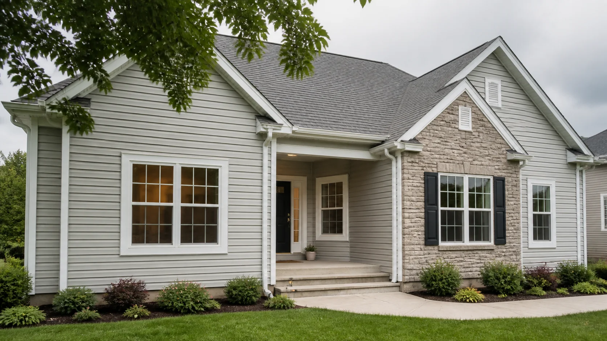
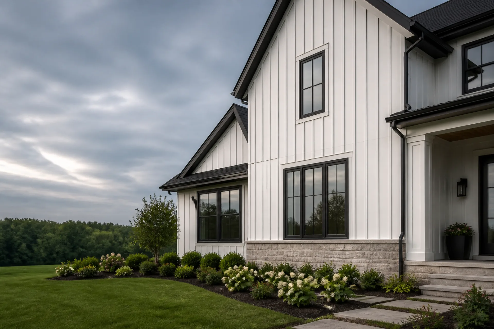
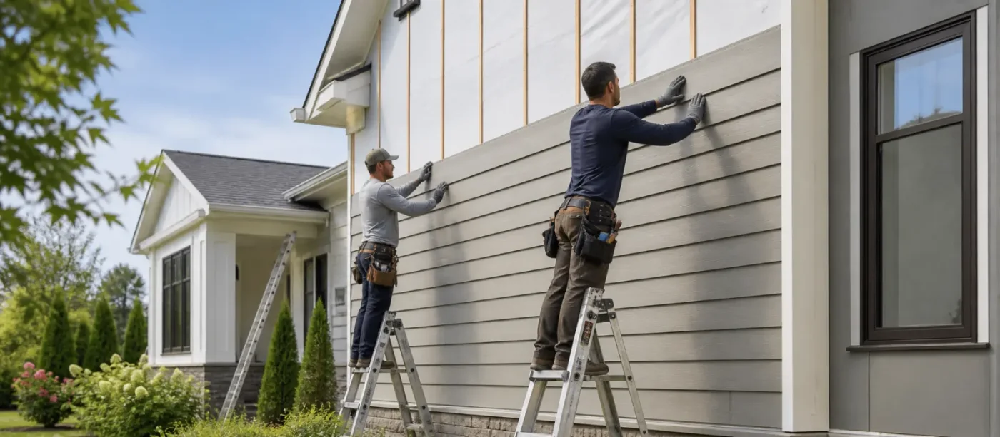
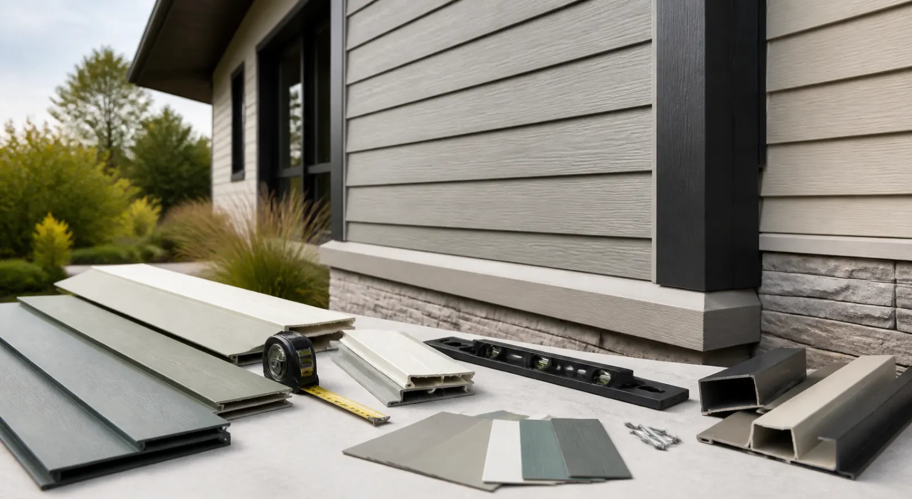

★★★★★
“The installation team helped us choose the right profile, kept every line clean, and made the whole exterior feel finished.”
William Hobbs
Customer
Our Craft
From the first panel to the final trim — planned, installed and maintained as one continuous job.
Vinyl keeps the composition crisp with steady horizontal rhythm.
Real exterior projects, reviewed by people who wanted clearer siding choices, careful installation, and repair work that felt calm from start to finish.
“The installation team helped us choose the right profile, kept every line clean, and made the whole exterior feel finished.”
“They traced the damage, matched the siding, and repaired the section without making the facade look patched.”

Before / After
Move across the photo to reveal how a tired exterior becomes a clean, weather-ready facade.

Before AfterThe same residence rebalances its siding direction, scale and architectural emphasis.
Read the home and the role its exterior needs to play.
See material choices as part of one composition.
Set the assembly and details in a clear order.
Bring the facade back to its quiet, finished state.
FAQ
Start by observing the facade as a whole: its orientation, existing material, window lines and the conditions it faces. Then compare profiles and assembly details.
The best fit depends on climate, maintenance expectations, desired texture and the architectural character you want to preserve or introduce.
Local damage can often be assessed and repaired when the surrounding assembly is sound. Widespread symptoms usually deserve a broader investigation.
Yes. The direction, width and reveal of each panel materially affect how broad, tall, quiet or detailed an elevation appears.
Most timelines depend on home size, existing siding removal, weather, and detail work around openings, trim, and corners.
SIDINGS · Exterior Systems
From the first measurement to the final trim line, each project is assembled with the same care: aligned panels, protected seams, and a facade built to hold its rhythm through every season.
Explore Our Craft
How We Work
Every job starts with a full read of the elevation — orientation, existing material, window lines and the conditions it faces — before a single panel is measured or cut.

Why SIDINGS
Licensed installers, weather-tested materials and a workmanship guarantee back every project — so the finish looks calm today and holds up through every season.

Long-Term Performance
From reveal width to fastening depth, every detail is set for durability — so the facade keeps its rhythm, sheds weather cleanly and needs less upkeep over time.
